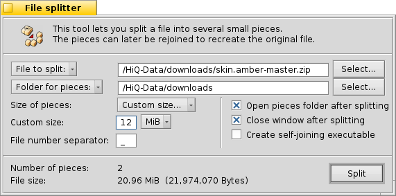

© 2004 Ramshankar
| File Splitter tool |
Beezer 0.07 onwards comes with tools to split and join files. As you may know :) the File Splitter is used for creating small pieces of a larger file. The File Splitter will not actually break a file into smaller pieces but rather make small pieces from a file, meaning the original file is not altered, only the pieces are created.
The File Splitter can be opened from two places, either from the Welcome window or from the Archive window.
 File to splitFolder for pieces
When clicked gives a list of recently split files that you can choose from. Clicking the "Select" button lets your browse your computer and choose a file. You can alternatively, directly type in the path of the file in the textbox.
Size of pieces
When clicked gives a list of recently chosen directories. Clicking the "Select" button lets you browse your computer and choose a directory. You can alternatively, directly type in the path of the folder in the textbox. This directory is where Beezer will put the split file pieces.
File number separator
Allows you to specify what is the size of each piece/chunk. You can either choose from a list of pre-defined sizes such as "1.44 MB - (floppy)", "650 MB - (CD)" and so on, or choose "Custom Size" and specify your own size. Please note the minimum size of a piece is 1 byte, and the maximum size being 1 bytes less than the size of the file being split.
Open pieces folder after splitting
By default, File Splitter when splitting a file called MySong.mp3 into 2 pieces, it would create the pieces named, MySong.mp3_01. and MySong.mp3_02. The underscore ("_") here is called the file number separator. The file number separator thus separates the file name from the split order number.
You can thus specify anything in place of the underscore as the file number separator, for example using ".z" for compatibility with WinZip's spanning method and so on.
Currently, digits (0-9), wildcards (* and ?) and path characters (: and /) are not allowed. Other than that you can enter anything.
Close window after splitting
If this option is checked, after splitting of the file is complete, the folder in which the pieces were created is automatically opened.
Create self-joining executable
Closes the File Splitter tool after splitting is complete. If the split operation is cancelled, the window isn't closed even if this option is specified.
If this option is checked, Beezer will create a BeOS executable file in the pieces folder, that when run will automatically re-join the pieces to create the original file.
This executable is a BeOS executable and cannot be run from Windows. Also this executable can be run from a system that does not have Beezer installed. It is completely independent of Beezer and would be useful if you are sending the split files to someone who has BeOS or other flavours of it and whom does not have Beezer. It is also very useful for quickly re-joining the files and is faster than opening Beezer, and using the File Joiner tool.
Note:Number of pieces
For the self-joining executable to work it must be placed in the SAME directory as the pieces and the pieces should NOT be renamed, as the executable contains information about the pieces and it's file number separators.
File size
Shows you how many pieces will Beezer end-up creating for the specified size of pieces and the file size. Note, Beezer cannot create any more than 32767 pieces.
Split!
Shows you the size of the file that is to be split.
! Tip
Clicking this would start the split process. This process can safely be cancelled before it completes. Beezer will delete any partially created pieces, but whatever pieces are fully created will not be deleted.
You can choose files to split from the Tracker by dropping them on the File Splitter window. Also, you can drop a folder on the File Splitter window to specify the folder for creating the pieces.
| File Joiner Tool |